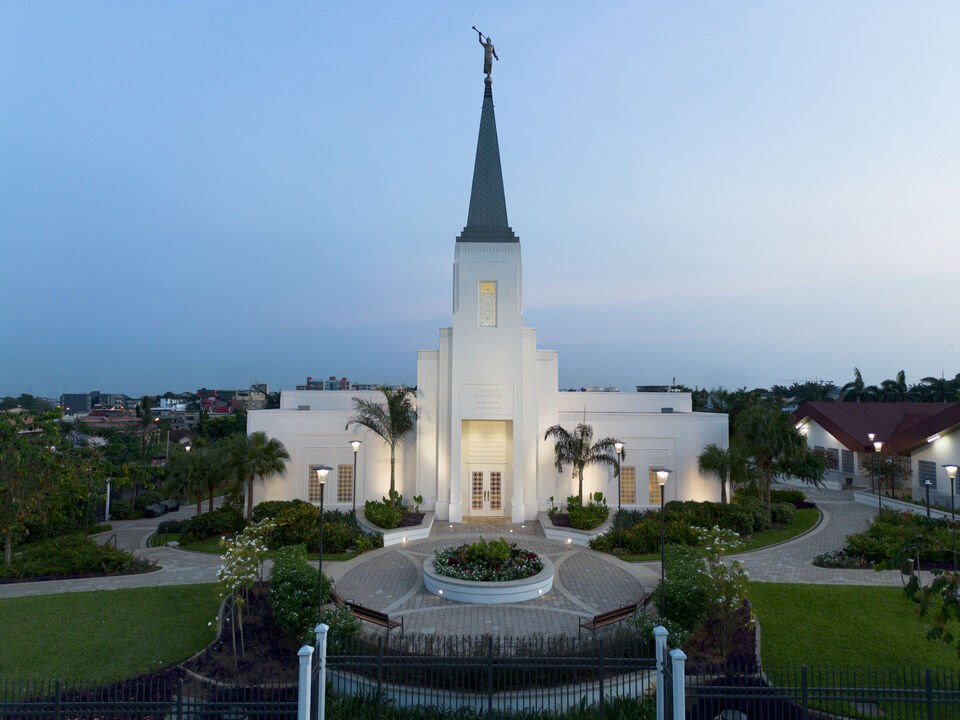

Abidjan Côte d'Ivoire Temple
About the Temple
The Abidjan Côte d'Ivoire Temple is the seventh temple built in Africa and the first for Côte d'Ivoire.
Dedicated 25 May 2025: Dedication Prayer
Visiting Information
- Location: Lot 118 Riviera Abothan Cocody, Abidjan Côte d'Ivoire
- Hours: Check Ordinance Schedule
- Phone: +225 25 20 10 8010
- Housing: Available